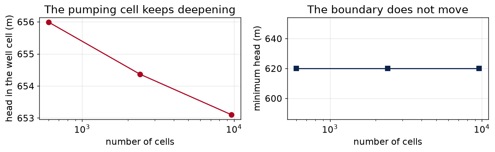
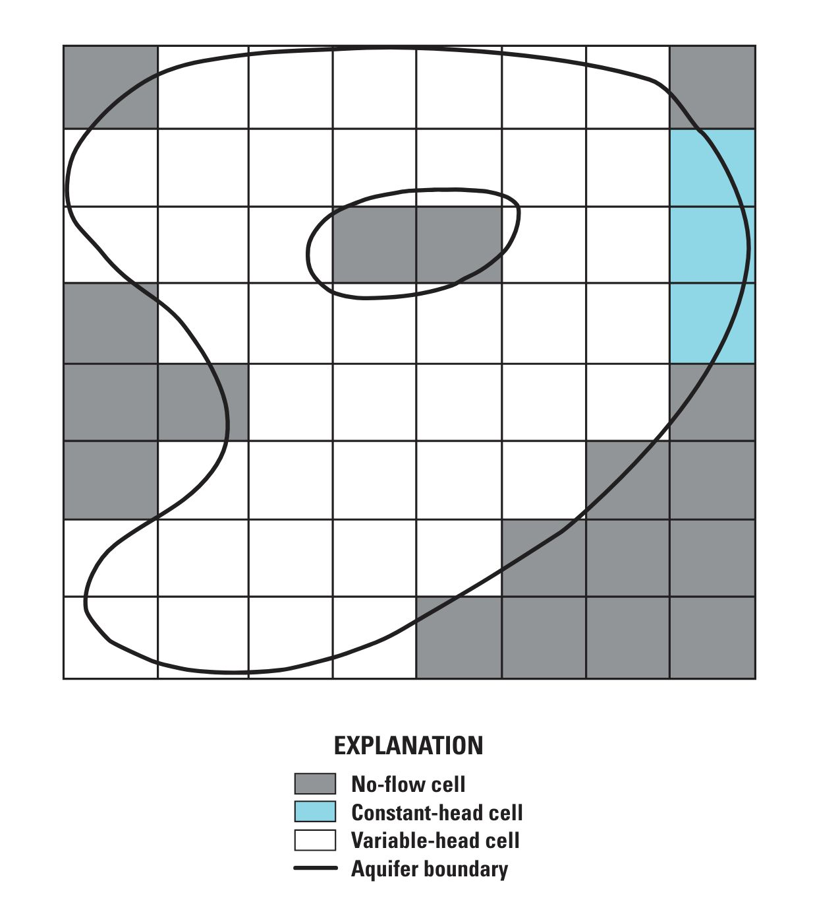
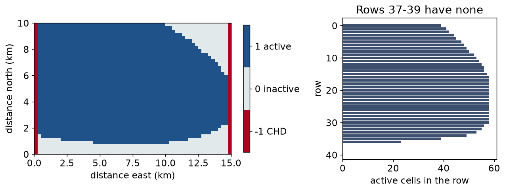

cell size cells well head min head
500m 600 655.990m 620.00m
250m 2,400 654.365m 620.00m
125m 9,600 653.101m 620.00mHWRS 564a · Week 12 · Tuesday, November 10
Week 12, session 1 of 2
ibound, and domains that aren’t rectanglesA number that changes when you refine the grid is a number about your grid, not about the aquifer.
The test: run the same physical problem at two resolutions and see whether the answer moves.
Note physical problem. The well goes at the same location, not the same cell index — 7,500 m east and 5,000 m south, whatever that is in cells.
cell size cells well head min head
500m 600 655.990m 620.00m
250m 2,400 654.365m 620.00m
125m 9,600 653.101m 620.00mThe minimum head does not move at all — it is a boundary condition. The well head keeps falling.

Head near a well varies logarithmically with distance:
\[h(r) = h_0 + \frac{Q}{2\pi T}\ln\frac{r}{r_0}\]
So the average head over a cell containing a well depends on how big that cell is — forever. Halve the cell and the average goes deeper.
The head in a pumping cell is not a water level in a well. Reporting it as one is among the most common errors in groundwater modelling reports.
Those are the numbers you report. If you need a pumping water level you apply an analytical correction, refine locally, or say you can’t.
Three runs of the same problem. Decide whether the grid is fine enough.
Hint
Converging means each successive change is smaller in magnitude than the last. abs() both of them before comparing.
Solution
+1.267 then +0.627 — halving each time, so yes, the sequence is converging, just to a value it never quite reaches.
Had the second change been larger than the first, the grid would be too coarse to be saying anything at all, and the right response is to refine until the changes shrink — not to pick whichever answer you like.
ibound| Value | Meaning | Head is |
|---|---|---|
1 |
active | solved for |
0 |
inactive — not in the model | never computed |
-1 |
constant head | fixed at strt, forever |
ibound = 0 is not the same as hk = 0. An inactive cell is removed from the equations. A zero-conductivity cell is still solved for, still has a head, and still makes your solver miserable.

The grid stays rectangular, but the solved domain does not have to be.
Cell status is a modeling decision about the domain, not a cosmetic mask.
ibound = np.ones((1, NROW, NCOL), dtype=int)
ibound[0][land_surface > 850.0] = 0 # bedrock, not basin fill
ibound[:, :, 0] = -1
ibound[:, :, -1] = -1387 cells inactive — 16% of the grid. The domain is now basin-shaped.

The southern three rows became a wall with nothing behind it.
Checking connectivity is your job. Nothing in the software does it for you, and a zero discrepancy will not warn you.
Hint
Summing a boolean array counts the Trues. np.where(condition)[0] gives the indices where it holds.
Solution
Three rows, 7 through 9.
The fix in the lab is to raise the bedrock cutoff until every row reaches a boundary. Note what that means: you changed a geological decision because of a numerical problem. Sometimes right, sometimes the start of a model answering a different question — but either way it goes in the report, not in your head.
You need to resolve a cone of depression about 2 km across, and the domain is 15 km by 10 km. Cells must be square.
Hint
If you need 8 cells across a 2 km feature, each cell can be at most 2000/8 across. Then count how many fit in the domain.
Solution
max_cell_size = cone_width_m / cells_across_cone
n_cells = (domain_x / max_cell_size) * (domain_y / max_cell_size)250 m cells, 2,400 of them — which is where the number I handed you in Week 11 came from.
Resolve the feature you came to look at. Same argument as choosing a time step, and the same argument as choosing a rolling window in Week 5: the discretization has to be finer than the thing you are trying to see.
What you did today
ibound: 1 active, 0 inactive, −1 constant head — and 0 is not hk = 0Before Thursday
labs/week12/week12_lab_discretization_boundaries.ipynbThursday
Taking the confining layer off, and the model that stops converging.
HWRS 564a · Fall 2026